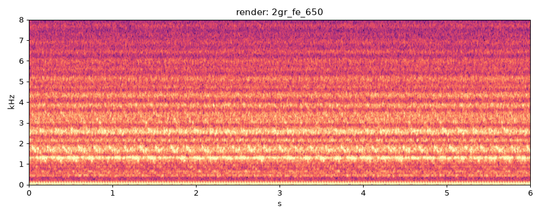
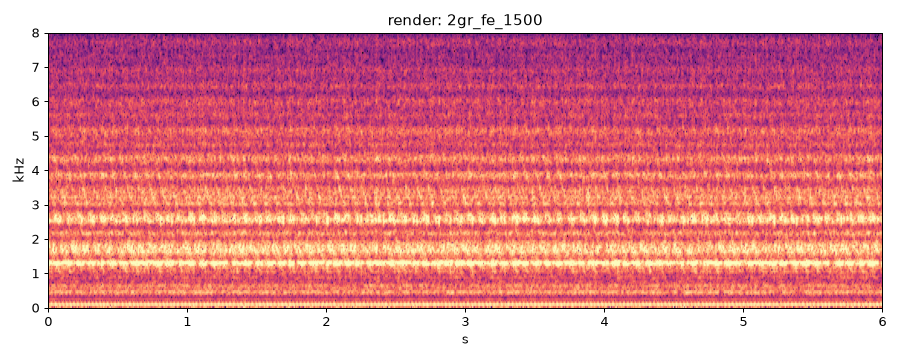
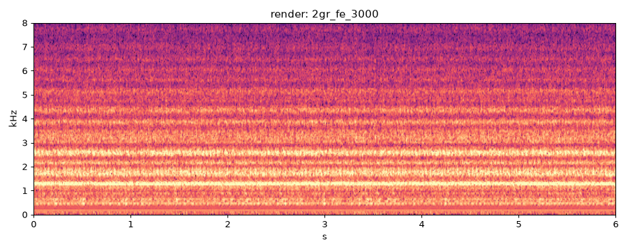
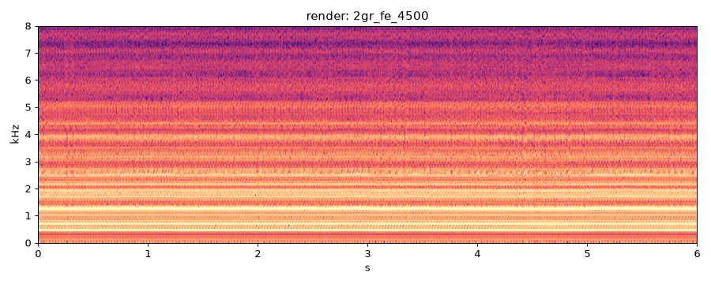
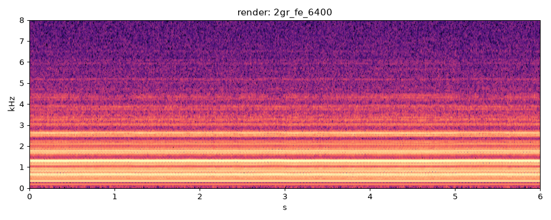
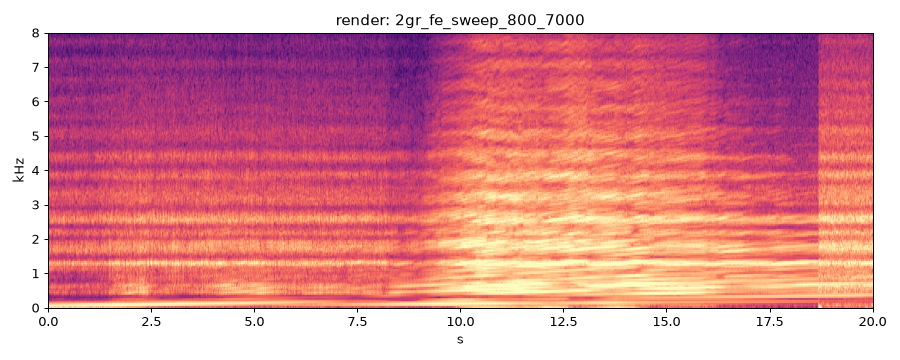

| check | value |
|---|---|
| deterministic | PASS |
| nan_free | PASS |
| below_full_scale | PASS |
| rtf_60s | 3.78 |
| rtf_ok | FAIL |
| firing_freq_ok | PASS |
current best
| metric | value | vs prev |
|---|---|---|
| firing freq error % | 0.019 | |
| half-order level dB | -11.2 | |
| HNR dB | 13.3 | |
| crest dB | 14.6 | |
| centroid Hz | 2699 | |
| flatness | 0.0005 | |
| max_abs | 0.274 | |
| rtf | 3.850 | |
| peak_cyl_pressure_bar | 16.860 |

current best
| metric | value | vs prev |
|---|---|---|
| firing freq error % | 0.038 | |
| half-order level dB | -2.2 | |
| HNR dB | 12.7 | |
| crest dB | 14.4 | |
| centroid Hz | 2831 | |
| flatness | 0.0013 | |
| max_abs | 0.235 | |
| rtf | 3.510 | |
| peak_cyl_pressure_bar | 36.610 |

current best
| metric | value | vs prev |
|---|---|---|
| firing freq error % | 0.035 | |
| half-order level dB | -0.8 | |
| HNR dB | 12.7 | |
| crest dB | 13.6 | |
| centroid Hz | 2723 | |
| flatness | 0.0012 | |
| max_abs | 0.388 | |
| rtf | 3.340 | |
| peak_cyl_pressure_bar | 52.310 |

current best
| metric | value | vs prev |
|---|---|---|
| firing freq error % | 0.034 | |
| half-order level dB | 2.9 | |
| HNR dB | 13.0 | |
| crest dB | 10.6 | |
| centroid Hz | 2686 | |
| flatness | 0.0016 | |
| max_abs | 0.967 | |
| rtf | 3.200 | |
| peak_cyl_pressure_bar | 68.990 |

current best
| metric | value | vs prev |
|---|---|---|
| firing freq error % | 0.034 | |
| half-order level dB | 0.9 | |
| HNR dB | 14.8 | |
| crest dB | 12.1 | |
| centroid Hz | 2298 | |
| flatness | 0.0012 | |
| max_abs | 0.504 | |
| rtf | 3.090 | |
| peak_cyl_pressure_bar | 94.500 |

| metric | value | vs prev |
|---|---|---|
| HNR dB | 12.7 | |
| crest dB | 14.1 | |
| centroid Hz | 2540 | |
| flatness | 0.0016 | |
| max_abs | 0.995 | |
| rtf | 3.720 | |
| peak_cyl_pressure_bar | 98.830 |
